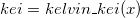

 evaluates an approximation to the Kelvin function kei x. The function is based on several Chebyshev expansions. For large x, kei x is so small that it cannot be computed without underflow and the function fails.
For more information please review the s19adc function in the NAG document.